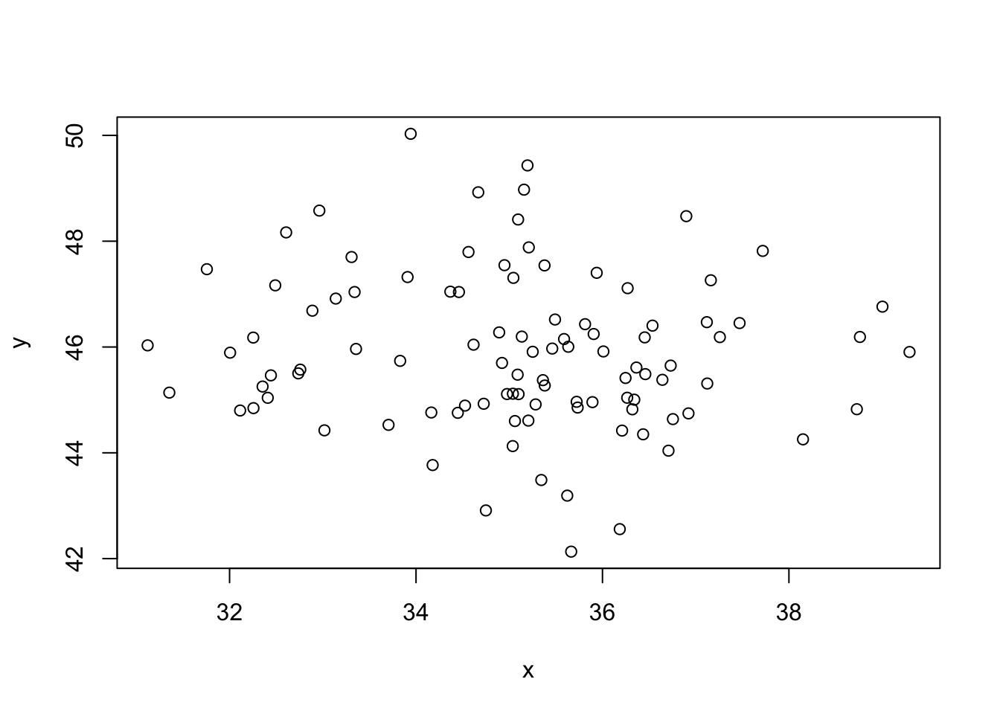
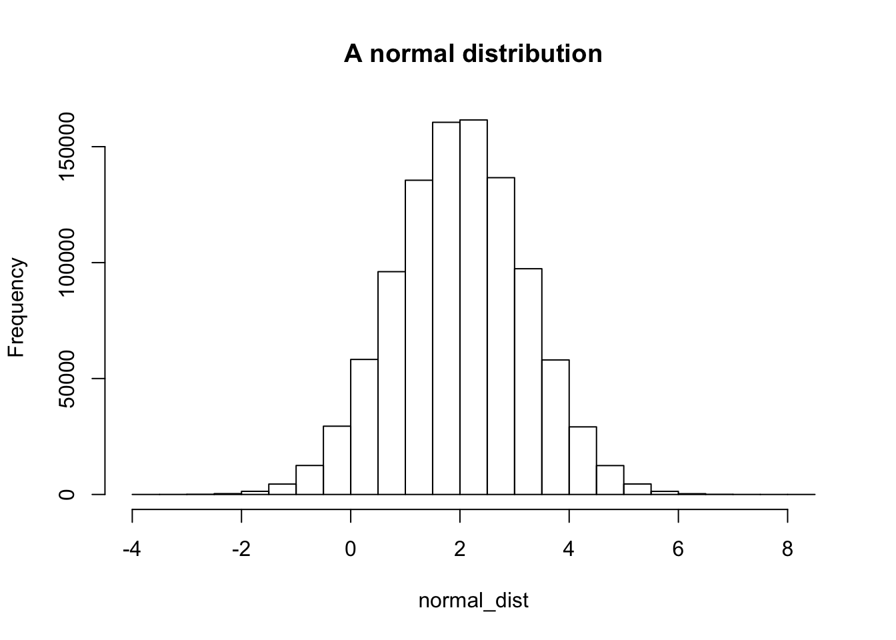
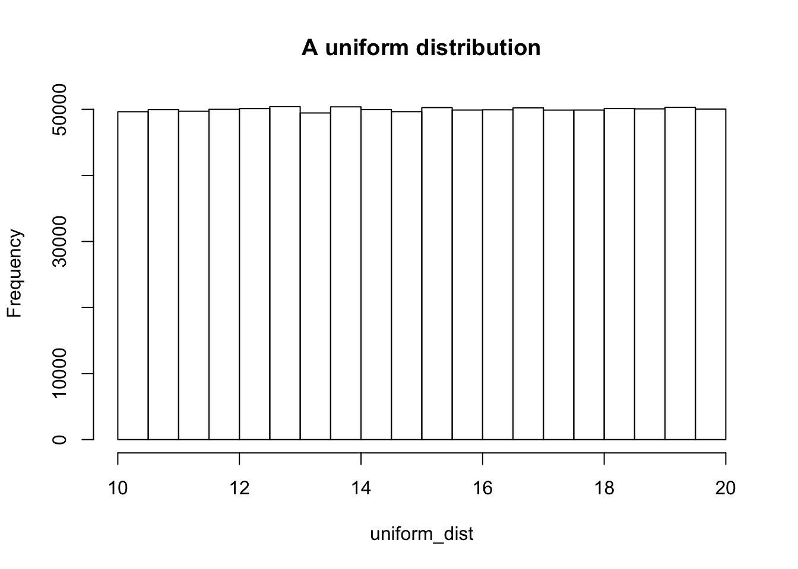
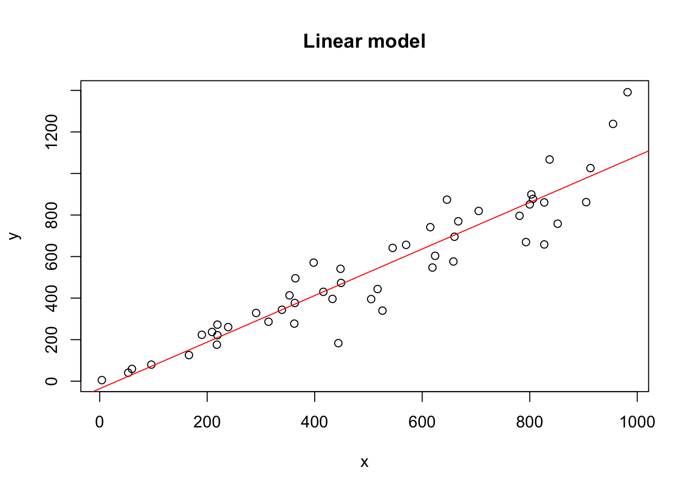

Day 1
Outline
- R History
- Programming concepts
- Environments
- How to work with objects: subsetting, indexing, apply functions
- Other important key R functions including basic statistics
R History
What is R?
R is calculator
2 + 2NO!! R is a programming languange. Specifically it’s a programming language built for statistics. And that’s what it’s best at.
R is a dialect of the S languange. S was developed by John Chambers at Bell Labs in 1976 and still exists today although hasn’t changed much since 1998. The philosopy behind S (and R) was to allow users to begin in an interactive enviroment that didn’t explicitly feel like programming. Then, as their needs and skills grew they could move into more of the programming aspects. This helps us understand some of why R is the way it is.
R began life in New Zealand, developed by Ross Ihaka and Robert Gentleman in 1991. It was made available to the public in 1993 and in 1995 R was licensed with the GNU General Public License, making it free and open-source. Version 1.0.0 was released in 2000 and the most recent version, 3.3.1 was released on June 21.
Some key features of R
- R runs on almost all platforms and operating systems.
- It’s free
- The core is quite lean - most funcionality is found in modular packages.
- Very powerful graphics and statistics capabilities
- Actively developed and a very active user community
- Rich and robust package repository (CRAN and Bioconductor)
- Excellent interactive capabilities - good for rapid development and data analysis
Packages
Packages are simply bits of code, external to the core R code that are designed to perform a specific function. The vast majority of the usefulness and functionality of R resides in packages. These packages live in online repositories and can be installed on your own system to be used.
R has a well defined system of packages, requiring package authors to document well and test installation thouroughly. This means that most packages will install easily on any system. For most R packages the central repository is CRAN (The Comprehensive R Archive Network), however, most bioinformatic packages live in another repository called Biocondcutor. Dispite differences in content and appearances, these essentially function in the same way.
Installing packages
Packages need only be installed once, although you may have to reinstall when upgrading R or when you want to use a newer version of a package.
To install from CRAN all one needs to do is:
install.packages("dplyr")If you’re not using RStudio then you may be asked to select a mirror. Just choose the location geographically closest to you.
Bioconductor is slightly different - we’ll cover that in more detail in a later session.
Using packages
Once installed all the functions in a package are available to be used.
dplyr::glimpse(iris)
## Observations: 150
## Variables: 5
## $ Sepal.Length <dbl> 5.1, 4.9, 4.7, 4.6, 5.0, 5.4, 4.6, 5.0, 4.4, 4.9,...
## $ Sepal.Width <dbl> 3.5, 3.0, 3.2, 3.1, 3.6, 3.9, 3.4, 3.4, 2.9, 3.1,...
## $ Petal.Length <dbl> 1.4, 1.4, 1.3, 1.5, 1.4, 1.7, 1.4, 1.5, 1.4, 1.5,...
## $ Petal.Width <dbl> 0.2, 0.2, 0.2, 0.2, 0.2, 0.4, 0.3, 0.2, 0.2, 0.1,...
## $ Species <fctr> setosa, setosa, setosa, setosa, setosa, setosa, ...Here the name of the package is provide followed by two colons and then the name of the function you want to use. The :: loads the package into memory and allows you to access all of the functions.
However, this can get tedious typing out the package name everytime so R provides a function library() used to attach packages. The library function first loads then “attaches” the package. Basically this means you can now use functions from a package without typing the package names. Packages are attached in your current session and need to be attached every time you start a new session. Technically what is happening here is that when attaching a package R puts those functions in your search path, the place R looks first for objects and functions.
search()
## [1] ".GlobalEnv" "package:knitr" "package:stats"
## [4] "package:graphics" "package:grDevices" "package:utils"
## [7] "package:datasets" "package:methods" "Autoloads"
## [10] "package:base"
library("dplyr")
##
## Attaching package: 'dplyr'
## The following objects are masked from 'package:stats':
##
## filter, lag
## The following objects are masked from 'package:base':
##
## intersect, setdiff, setequal, union
search()
## [1] ".GlobalEnv" "package:dplyr" "package:knitr"
## [4] "package:stats" "package:graphics" "package:grDevices"
## [7] "package:utils" "package:datasets" "package:methods"
## [10] "Autoloads" "package:base"
glimpse(iris)
## Observations: 150
## Variables: 5
## $ Sepal.Length <dbl> 5.1, 4.9, 4.7, 4.6, 5.0, 5.4, 4.6, 5.0, 4.4, 4.9,...
## $ Sepal.Width <dbl> 3.5, 3.0, 3.2, 3.1, 3.6, 3.9, 3.4, 3.4, 2.9, 3.1,...
## $ Petal.Length <dbl> 1.4, 1.4, 1.3, 1.5, 1.4, 1.7, 1.4, 1.5, 1.4, 1.5,...
## $ Petal.Width <dbl> 0.2, 0.2, 0.2, 0.2, 0.2, 0.4, 0.3, 0.2, 0.2, 0.1,...
## $ Species <fctr> setosa, setosa, setosa, setosa, setosa, setosa, ...There is some confusion on why they are called packages but you used the library() function to attach them. The correct terminology here is that individual packages are stored in your ‘library’. You use the library() function to load and attach a package from your library.
Namespaces
An important concept to be aware of when using packages is namespaces. Given the thousands of packages available it is quite likely that function names will overlap. If two functions have the same name and both are attached, R will by default use the one attached most recently. You can see this by looking at the order of the packages in the search path search() function.
To avoid problems and bizzare errors you can specify which function to use by using the :: notation as above to explicity indicate which function you’d like to use.
Pro tip: If your getting strange errors from a function that previously worked fine try typing ?function_name. In RStudio if there are multiple functions attached with the same name then the help window will give you links for both functions and the one at the top of the list is the one R uses by default.
Programming concepts
R is a programming language and in order to use it effectivly it is important to understand some basic programming concepts.
Variables / Objects
Think of a variable (also called objects) as container to hold a value. Containers are defined to hold specific types of values and we can give the informative names. These are the data types that we talked about in the last lesson. They can also be abitrarily complex. For example a DESeq object, used in analzying RNA-seq data contains the expression data, additional annotations on the genes, sample data, experiment details and results from any statistics run.
Objects are used to structure data and reduce repetition. They are passed to functions and can be modified.
x = 2
y = c(1,2,3)
x + y
## [1] 3 4 5
sum(x,y)
## [1] 8Functions
A function is a small bit of code designed to perform a single task over and over. Given a set of inputs a well designed function takes those, performs a pre-defined, single task and returns some type of output.
Functions are first-class citizens in R. They are used extensively, can be passed as parameters to other functions and functions can return other functions as output.
Most functions you use will be either base R functions (functions that are a part of the core R language) or functions defined by external packages. However, defining your own functions in R is very easy and can be very helpful to reduce repetition and mistakes in your analysis.
# base functions
seq(1:5)
## [1] 1 2 3 4 5
sum(c(2, 39, 22))
## [1] 63
# parameters are given using a single '='
x = rnorm(n = 100, mean = 35, sd = 2)
# but they don't have to be named as long as you give them in the right order
y = rnorm(100, 46, 1.5)
plot(x, y)
# functions can be nested
print(paste("The mean of the x vector is", round(mean(x))))
## [1] "The mean of the x vector is 35"
# a simple function of our own devising
say_hello = function(name) {
say = paste("Hello", name)
print(say)
}
say_hello("Matthew")
## [1] "Hello Matthew"Conditionals
Programming is often about making choices; if this then that. This is how we can control the program flow based on things like user input, features of our data, or the output of another function or program.
There are a number of ways to control program flow in R but the most common is an if/else statment so we’ll focus on that one.
If/Else
There are two main parts to an if statement. The part where we make the decision (if) and then the code following the if statement that is excuted when the if statment is true.
cats = "cool"
if (cats == "cool") {
print("You know it!")
}
## [1] "You know it!"Note the syntax here: Double equals (==) to signify comparision instead of assignment and the use of curly brackets to indicate the code we run when the if statement is true.
Adding an else statement allows to define code to run when the if statement is false.
cats = "uncool"
if (cats == "cool") {
print("You know it!")
} else {
print("Whaaat?!")
}
## [1] "Whaaat?!"If statements can be nested:
dogs = "cool"
if (cats == "cool") {
print("You know it!")
} else if (dogs == "cool" ) {
print("Phew, I was worried about you there.")
} else {
print("Whaaat?!")
}
## [1] "Phew, I was worried about you there."This can be a good way to choose from a list options but be careful about nests, within nests, within nests.
Logical operators
Any statement that returns a TRUE or FALSE can be used in an if statement.
3 + 2 == 4
## [1] FALSE
any(is.na(x))
## [1] FALSE
some_values = c(1,2,3,4)
3 %in% some_values
## [1] TRUE
# The %in% function retuns TRUE or FALSE for every value on the left-hand side depending on if a match is found
# on the right hand side. This can be useful for if statements but only if it returns a single TRUE/FALSE
test_values = c(0,3,5)
if (test_values %in% some_values) {
print("Yup")
}
## Warning in if (test_values %in% some_values) {: the condition has length >
## 1 and only the first element will be used
test_values %in% some_values
## [1] FALSE TRUE FALSEHere are some common logical operators that can be used in an if statement.
| Operator | Description |
|---|---|
| < | less than |
| <= | less than or equal to |
| > | greater than |
| >= | greather than or equal to |
| == | exactly equal to |
| != | not equal to |
| !x | not x |
| x | y |
| x & y | x AND y |
| isTRUE(x) | test if x is TRUE |
Assignment
A quick note here on two different assignment operators used in R. Historically R has used <- for assignment.
x <- 5
x
## [1] 5However, in this course so far you’ve seen me using = for assignment.
x = 5
x
## [1] 5Both are equally valid, despite what you may read otherwise. Each has a couple of quirks to be aware of but these are very minor. Decide which one you prefer and be consistent.
Using <-
- Longer to type (two key strokes, plus SHIFT)
- Can make mistakes like this: FALSE
- Your code will look more like the majority of what’s out there.
Using =
- Quicker to type
- Similar to modern programming lanugages
- Also used for passing parameters in functions
rnorm(n = 10) - Difference between
=and==can be confusing to start
Decide for yourself, be consistent and whichever you choose make sure to surround it in spaces.
# Good
x = 5
y <- 4
# Bad
x=5
y<-4Environments
What is an environment? This is a topic for an entire workshop in and of itself, however it is important to have a basic understanding of environments.
Environments are how R knows where to look for things. The only environment that you usually have to pay attention to is .GlobalEnv, your working environment. When you define an object z = 50, this object, z now lives in the global environment. When you ask R to do something with the object z, say print(z), then R begins to look for object z in the global environment. If it can’t find it there then it searches other places it knows like attached packages. For example if z happened to be a function in a package called alphabet and that package had been attached (library(alphabet)), then R would find z there.
Environments are important to understand even when you are starting out because they can be the source of hard to find but devestating mistakes. Know what is in your environment! RStudio has a very useful panel called Environment that tells you exactly what is in your global environment. The function ls() also lists the objects in your global environment.
Here’s the kicker - you can define objects of any name in your global environment. Here’s something you should never do. Best not to run this code in your own session.
5 + 5
## [1] 10
`+` = function(x,y) {
return(x*y)
}
5 + 5
## [1] 25
ls()
## [1] "+" "cats" "char_vector"
## [4] "cool_animals" "cool_animals_factor" "crazy_factor"
## [7] "dogs" "int_vector" "logical_vector"
## [10] "mat" "my_list" "nothing"
## [13] "num_vector" "say_hello" "some_values"
## [16] "test_values" "x" "y"
rm("+")
5 + 5
## [1] 10Why does this work? Hint: Thing about where R looks first to find objects.
Some tips: * Always start your analysis in a new environment * Never save your workspace (R asks you about this when quitting, always say no) * Don’t analyze different projects in the same environment. * If you have an error try re-running your script in a new session (fresh environment) * On the flipside, make sure your script can run in a new session. * Use unique names for your objects
How to work with objects: subsetting, indexing, apply functions
Subsetting
Some common ways to subset dataframes
head(iris)
## Sepal.Length Sepal.Width Petal.Length Petal.Width Species
## 1 5.1 3.5 1.4 0.2 setosa
## 2 4.9 3.0 1.4 0.2 setosa
## 3 4.7 3.2 1.3 0.2 setosa
## 4 4.6 3.1 1.5 0.2 setosa
## 5 5.0 3.6 1.4 0.2 setosa
## 6 5.4 3.9 1.7 0.4 setosa
# just the species column
iris$Species
## [1] setosa setosa setosa setosa setosa setosa
## [7] setosa setosa setosa setosa setosa setosa
## [13] setosa setosa setosa setosa setosa setosa
## [19] setosa setosa setosa setosa setosa setosa
## [25] setosa setosa setosa setosa setosa setosa
## [31] setosa setosa setosa setosa setosa setosa
## [37] setosa setosa setosa setosa setosa setosa
## [43] setosa setosa setosa setosa setosa setosa
## [49] setosa setosa versicolor versicolor versicolor versicolor
## [55] versicolor versicolor versicolor versicolor versicolor versicolor
## [61] versicolor versicolor versicolor versicolor versicolor versicolor
## [67] versicolor versicolor versicolor versicolor versicolor versicolor
## [73] versicolor versicolor versicolor versicolor versicolor versicolor
## [79] versicolor versicolor versicolor versicolor versicolor versicolor
## [85] versicolor versicolor versicolor versicolor versicolor versicolor
## [91] versicolor versicolor versicolor versicolor versicolor versicolor
## [97] versicolor versicolor versicolor versicolor virginica virginica
## [103] virginica virginica virginica virginica virginica virginica
## [109] virginica virginica virginica virginica virginica virginica
## [115] virginica virginica virginica virginica virginica virginica
## [121] virginica virginica virginica virginica virginica virginica
## [127] virginica virginica virginica virginica virginica virginica
## [133] virginica virginica virginica virginica virginica virginica
## [139] virginica virginica virginica virginica virginica virginica
## [145] virginica virginica virginica virginica virginica virginica
## Levels: setosa versicolor virginica
# 3rd row and all columns
iris[3, ]
## Sepal.Length Sepal.Width Petal.Length Petal.Width Species
## 3 4.7 3.2 1.3 0.2 setosa
# 3rd column and all rows
iris[, 3]
## [1] 1.4 1.4 1.3 1.5 1.4 1.7 1.4 1.5 1.4 1.5 1.5 1.6 1.4 1.1 1.2 1.5 1.3
## [18] 1.4 1.7 1.5 1.7 1.5 1.0 1.7 1.9 1.6 1.6 1.5 1.4 1.6 1.6 1.5 1.5 1.4
## [35] 1.5 1.2 1.3 1.4 1.3 1.5 1.3 1.3 1.3 1.6 1.9 1.4 1.6 1.4 1.5 1.4 4.7
## [52] 4.5 4.9 4.0 4.6 4.5 4.7 3.3 4.6 3.9 3.5 4.2 4.0 4.7 3.6 4.4 4.5 4.1
## [69] 4.5 3.9 4.8 4.0 4.9 4.7 4.3 4.4 4.8 5.0 4.5 3.5 3.8 3.7 3.9 5.1 4.5
## [86] 4.5 4.7 4.4 4.1 4.0 4.4 4.6 4.0 3.3 4.2 4.2 4.2 4.3 3.0 4.1 6.0 5.1
## [103] 5.9 5.6 5.8 6.6 4.5 6.3 5.8 6.1 5.1 5.3 5.5 5.0 5.1 5.3 5.5 6.7 6.9
## [120] 5.0 5.7 4.9 6.7 4.9 5.7 6.0 4.8 4.9 5.6 5.8 6.1 6.4 5.6 5.1 5.6 6.1
## [137] 5.6 5.5 4.8 5.4 5.6 5.1 5.1 5.9 5.7 5.2 5.0 5.2 5.4 5.1
# 4th row and 2nd column
iris[4, 2]
## [1] 3.1
# rows 1 to 10 and all columns
iris[1:10, ]
## Sepal.Length Sepal.Width Petal.Length Petal.Width Species
## 1 5.1 3.5 1.4 0.2 setosa
## 2 4.9 3.0 1.4 0.2 setosa
## 3 4.7 3.2 1.3 0.2 setosa
## 4 4.6 3.1 1.5 0.2 setosa
## 5 5.0 3.6 1.4 0.2 setosa
## 6 5.4 3.9 1.7 0.4 setosa
## 7 4.6 3.4 1.4 0.3 setosa
## 8 5.0 3.4 1.5 0.2 setosa
## 9 4.4 2.9 1.4 0.2 setosa
## 10 4.9 3.1 1.5 0.1 setosaUsing vectors
# predfined vector
rows_to_keep = c(2, 4, 7, 9)
iris[rows_to_keep, ]
## Sepal.Length Sepal.Width Petal.Length Petal.Width Species
## 2 4.9 3.0 1.4 0.2 setosa
## 4 4.6 3.1 1.5 0.2 setosa
## 7 4.6 3.4 1.4 0.3 setosa
## 9 4.4 2.9 1.4 0.2 setosa
# logicals work to
iris$Species == "setosa"
## [1] TRUE TRUE TRUE TRUE TRUE TRUE TRUE TRUE TRUE TRUE TRUE
## [12] TRUE TRUE TRUE TRUE TRUE TRUE TRUE TRUE TRUE TRUE TRUE
## [23] TRUE TRUE TRUE TRUE TRUE TRUE TRUE TRUE TRUE TRUE TRUE
## [34] TRUE TRUE TRUE TRUE TRUE TRUE TRUE TRUE TRUE TRUE TRUE
## [45] TRUE TRUE TRUE TRUE TRUE TRUE FALSE FALSE FALSE FALSE FALSE
## [56] FALSE FALSE FALSE FALSE FALSE FALSE FALSE FALSE FALSE FALSE FALSE
## [67] FALSE FALSE FALSE FALSE FALSE FALSE FALSE FALSE FALSE FALSE FALSE
## [78] FALSE FALSE FALSE FALSE FALSE FALSE FALSE FALSE FALSE FALSE FALSE
## [89] FALSE FALSE FALSE FALSE FALSE FALSE FALSE FALSE FALSE FALSE FALSE
## [100] FALSE FALSE FALSE FALSE FALSE FALSE FALSE FALSE FALSE FALSE FALSE
## [111] FALSE FALSE FALSE FALSE FALSE FALSE FALSE FALSE FALSE FALSE FALSE
## [122] FALSE FALSE FALSE FALSE FALSE FALSE FALSE FALSE FALSE FALSE FALSE
## [133] FALSE FALSE FALSE FALSE FALSE FALSE FALSE FALSE FALSE FALSE FALSE
## [144] FALSE FALSE FALSE FALSE FALSE FALSE FALSE
iris[iris$Species == "setosa", ]
## Sepal.Length Sepal.Width Petal.Length Petal.Width Species
## 1 5.1 3.5 1.4 0.2 setosa
## 2 4.9 3.0 1.4 0.2 setosa
## 3 4.7 3.2 1.3 0.2 setosa
## 4 4.6 3.1 1.5 0.2 setosa
## 5 5.0 3.6 1.4 0.2 setosa
## 6 5.4 3.9 1.7 0.4 setosa
## 7 4.6 3.4 1.4 0.3 setosa
## 8 5.0 3.4 1.5 0.2 setosa
## 9 4.4 2.9 1.4 0.2 setosa
## 10 4.9 3.1 1.5 0.1 setosa
## 11 5.4 3.7 1.5 0.2 setosa
## 12 4.8 3.4 1.6 0.2 setosa
## 13 4.8 3.0 1.4 0.1 setosa
## 14 4.3 3.0 1.1 0.1 setosa
## 15 5.8 4.0 1.2 0.2 setosa
## 16 5.7 4.4 1.5 0.4 setosa
## 17 5.4 3.9 1.3 0.4 setosa
## 18 5.1 3.5 1.4 0.3 setosa
## 19 5.7 3.8 1.7 0.3 setosa
## 20 5.1 3.8 1.5 0.3 setosa
## 21 5.4 3.4 1.7 0.2 setosa
## 22 5.1 3.7 1.5 0.4 setosa
## 23 4.6 3.6 1.0 0.2 setosa
## 24 5.1 3.3 1.7 0.5 setosa
## 25 4.8 3.4 1.9 0.2 setosa
## 26 5.0 3.0 1.6 0.2 setosa
## 27 5.0 3.4 1.6 0.4 setosa
## 28 5.2 3.5 1.5 0.2 setosa
## 29 5.2 3.4 1.4 0.2 setosa
## 30 4.7 3.2 1.6 0.2 setosa
## 31 4.8 3.1 1.6 0.2 setosa
## 32 5.4 3.4 1.5 0.4 setosa
## 33 5.2 4.1 1.5 0.1 setosa
## 34 5.5 4.2 1.4 0.2 setosa
## 35 4.9 3.1 1.5 0.2 setosa
## 36 5.0 3.2 1.2 0.2 setosa
## 37 5.5 3.5 1.3 0.2 setosa
## 38 4.9 3.6 1.4 0.1 setosa
## 39 4.4 3.0 1.3 0.2 setosa
## 40 5.1 3.4 1.5 0.2 setosa
## 41 5.0 3.5 1.3 0.3 setosa
## 42 4.5 2.3 1.3 0.3 setosa
## 43 4.4 3.2 1.3 0.2 setosa
## 44 5.0 3.5 1.6 0.6 setosa
## 45 5.1 3.8 1.9 0.4 setosa
## 46 4.8 3.0 1.4 0.3 setosa
## 47 5.1 3.8 1.6 0.2 setosa
## 48 4.6 3.2 1.4 0.2 setosa
## 49 5.3 3.7 1.5 0.2 setosa
## 50 5.0 3.3 1.4 0.2 setosaHomework: Read the subsetting chapter in Advanced R
Loops and apply
Loops
Many times when programming, a task, or set of tasks, need to be done over and over again on lots of things. For instance lets say that you have a data frame and want to calcluate the mean of each column.
df = data.frame(x = rnorm(50), y = rnorm(50), z = rnorm(50))
head(df)
## x y z
## 1 -1.1421217 -0.84259699 0.51935861
## 2 -0.2137050 -1.13051348 -2.09800074
## 3 0.3672298 -0.02312455 -0.43563416
## 4 1.1681423 0.08859887 0.61692242
## 5 0.3799084 1.14065406 -1.17833718
## 6 -0.1334893 0.19032027 -0.06540244It could be done individually:
mean(df$x)
## [1] -0.05226507
mean(df$y)
## [1] -0.1121689
mean(df$z)
## [1] -0.1572788But this gets tedious for many columns and it’s easy to make mistakes. Loops are a good choice here.
output = vector("double", ncol(df))
for (i in seq_along(df)) {
output[[i]] = mean(df[[i]])
}
output
## [1] -0.05226507 -0.11216890 -0.15727883Break it down:
output = vector("double", ncol(df))First predefine our output
Other important key R functions
Generating and manipulating sequences
seq(1,10)
## [1] 1 2 3 4 5 6 7 8 9 10
seq(1, 20, by = 2)
## [1] 1 3 5 7 9 11 13 15 17 19
seq(from = 2, by = 2.5, length.out = 10)
## [1] 2.0 4.5 7.0 9.5 12.0 14.5 17.0 19.5 22.0 24.5
rep(2, 3)
## [1] 2 2 2
rep(1:3, 4)
## [1] 1 2 3 1 2 3 1 2 3 1 2 3
rep(1:3, each = 2)
## [1] 1 1 2 2 3 3
rep(c("A", "B", "C"), each = 6)
## [1] "A" "A" "A" "A" "A" "A" "B" "B" "B" "B" "B" "B" "C" "C" "C" "C" "C"
## [18] "C"normal_dist = rnorm(n = 1e6, mean = 2, sd = 1.2)
hist(normal_dist, main = "A normal distribution")
uniform_dist = runif(n = 1e6, min = 10, max = 20)
hist(uniform_dist, main = "A uniform distribution")
Basic statistics
set.seed(3823)
x = sample(1:1000, size = 50, replace = TRUE)
max(x)
## [1] 982
min(x)
## [1] 4
range(x)
## [1] 4 982
mean(x)
## [1] 511.7
median(x)
## [1] 511
sum(x)
## [1] 25585
sd(x)
## [1] 265.8911
y = rnorm(x, 1, 0.2 * x) + x
plot(x,y)
var(x)
## [1] 70698.09
cor(x,y)
## [1] 0.9351317my_model = lm(y ~ x)
print(my_model)
##
## Call:
## lm(formula = y ~ x)
##
## Coefficients:
## (Intercept) x
## -36.125 1.121
summary(my_model)
##
## Call:
## lm(formula = y ~ x)
##
## Residuals:
## Min 1Q Median 3Q Max
## -278.58 -50.71 9.29 53.68 326.62
##
## Coefficients:
## Estimate Std. Error t value Pr(>|t|)
## (Intercept) -36.1253 35.2760 -1.024 0.311
## x 1.1210 0.0613 18.286 <2e-16 ***
## ---
## Signif. codes: 0 '***' 0.001 '**' 0.01 '*' 0.05 '.' 0.1 ' ' 1
##
## Residual standard error: 114.1 on 48 degrees of freedom
## Multiple R-squared: 0.8745, Adjusted R-squared: 0.8719
## F-statistic: 334.4 on 1 and 48 DF, p-value: < 2.2e-16
plot(x, y, main = "Linear model")
abline(my_model, col = "red")
Homework
Install the readr package and using the readr documentation figure out how to load the provided dataset. With this dataset answer the following:
- How many rows and columns are in the data?
- What is the maximum value in the “” column?
- Are variables x and y linearly correlated?
- Write a function that mean centers a column (subtract the column mean from every value in that column) and run it on all columns in the dataset.